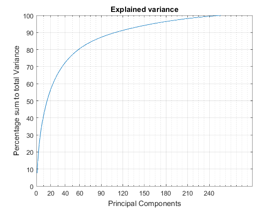

Task 1
Problem: Perform Principal Component Analysis of the Semeion Handwritten Digit data set and show a scatter plot of the first 2 principal components of all the images in the database
Estimated time is 3 seconds.
Contents
Loading Data
Importing data and extracting the last column which is the classification
tic;
data = importdata('semeion.data');
classification = data(:,end);
data = data(:,1:end-1);
Plot Covariance Matrix
figure;
imagesc(cov(data));
colorbar;
title('Covariance matrix of Data');

Principal Component Analysis
coeff = pca(data);
First Two PC
Plotting first two principal components in a 2D scatter plot, then we center the scatter plot.
f_two = coeff(:,1:2); % Projection reduction = data * f_two; reduction = reduction'; % Centering reduction = myCenter(reduction); figure; scatter(reduction(1,:), reduction(2,:),10,classification,'filled'); title('First Two Principal Components'); xlabel('First Principal Component'); ylabel('Second Principal Component'); colormap(jet(10)); colorbar;
First Two PC with Whitened Data
Whitening of data and scatter plot of the first two PC, then we center the plot.
% Whitening w_data = whitening(data); % PCA w_coeff = pca(w_data); w_f_two = coeff(:,1:2); % Projection reduction = w_data * w_f_two; reduction = reduction'; % Centering reduction = myCenter(reduction); figure; scatter(reduction(1,:), reduction(2,:),10,classification,'filled'); title('First Two Principal Components with Whitened Data'); xlabel('First Principal Component'); ylabel('Second Principal Component'); colormap(jet(10)); colorbar; figure; imagesc(cov(w_data)); colorbar; title('Covariance matrix of Whitened Data');
First Three PC
First three principal components in a 3D scatter plot.
f_three = coeff(:,1:3); reduction = data * f_three; reduction = reduction'; figure; scatter3(reduction(1,:), reduction(2,:), reduction(3,:), 10, classification, 'filled'); title('First 3 Principal Components'); colormap(jet(10)); colorbar;
Explained variance
As we can see the first 25 principal components have the highest percentage of variance contribution.
[coeff,score,latent,tsquared,explained,mu] = pca(data); figure; plot(explained); grid on; axis([1 256 0 8]); title('Explained variance'); set(gca, 'xtick', [0:20:45 60:30:256] ); set(gca, 'xminortick','on'); set(gca, 'xminorgrid','on'); xlabel('Principal Components'); ylabel('Percentage of the total variance'); v=[]; for i = 1:256 v = [v; sum(explained(1:i))]; end figure; plot(v); grid on; set(gca, 'xtick', [0:20:45 60:30:256] ); xlabel('Principal Components'); ylabel('Percentage sum to total Variance'); title('Explained variance'); set(gca, 'xminortick','on'); set(gca, 'xminorgrid','on'); toc
Elapsed time is 3.431497 seconds.